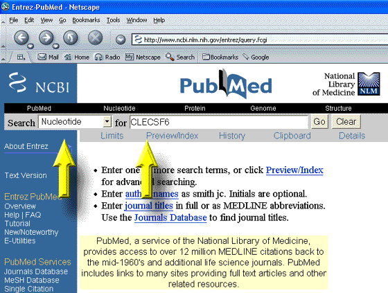
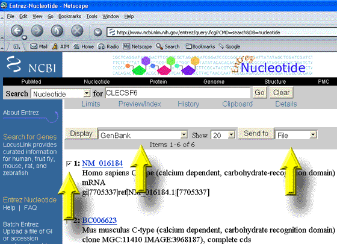

If you want to download a list of
GenBank formatted files that contain your cDNAs,
one way to do it is with NCBI's
Entrez
browser.
Below is a simple way to do it in two steps
1. Select "Nucleotide" and fill in keywords or ID numbers

2.
Next, select Display GenBank, Send to File
and select the cDNAs you want to save

That's all. You are now ready to create cDNA
Primers